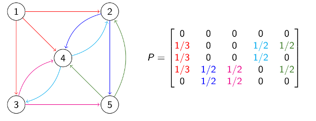

Linear mathematics for applications
 This repository contains material for an undergraduate course on concrete, matrix-based linear algebra.
Lecture slides:
screen version
and
print version
Notes
Additional brief notes on using
Maple
or
Python
for calculations in linear algebra.
Exercises and solutions
Exam questions and solutions
Maple worksheets
All files
(including LaTeX source etc, released under a Creative Commons license)